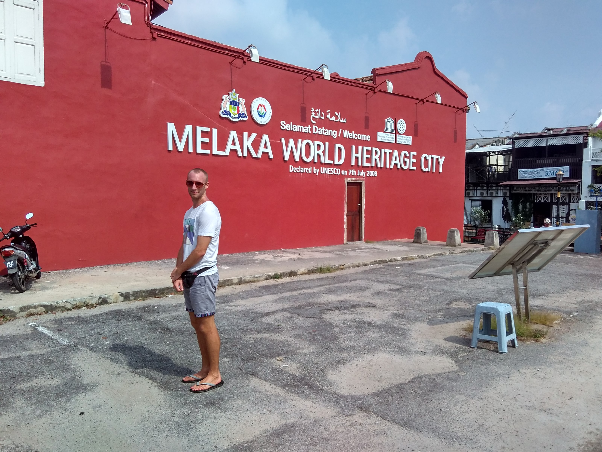
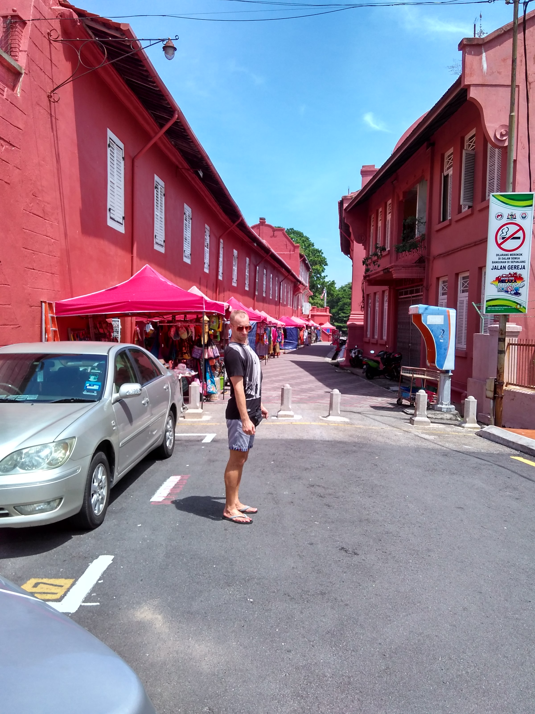
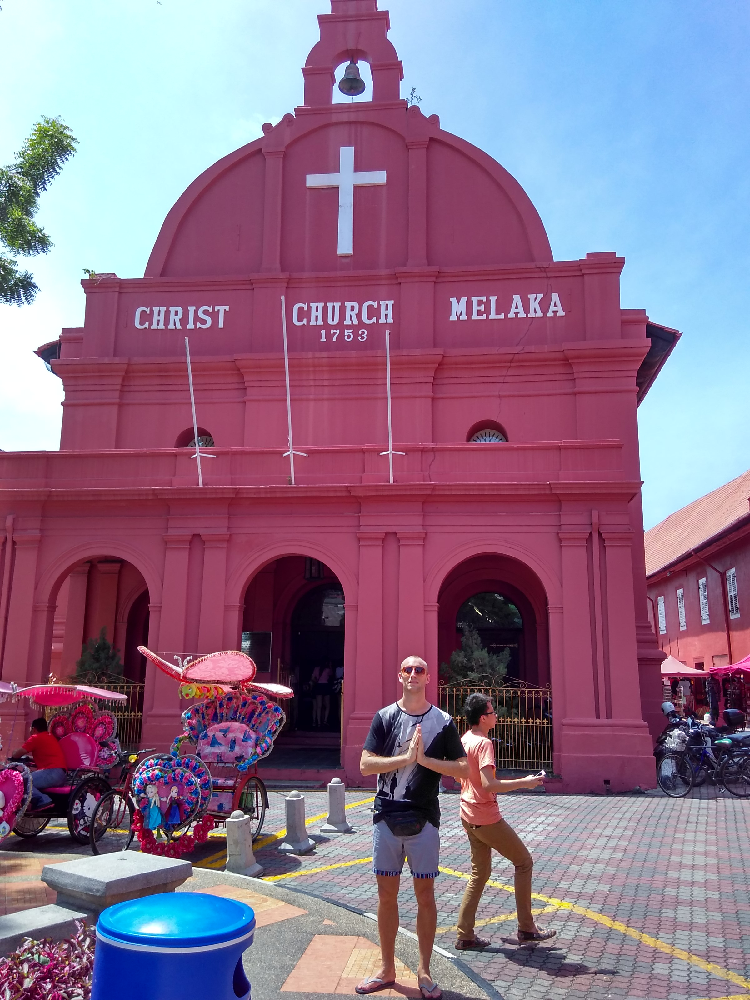
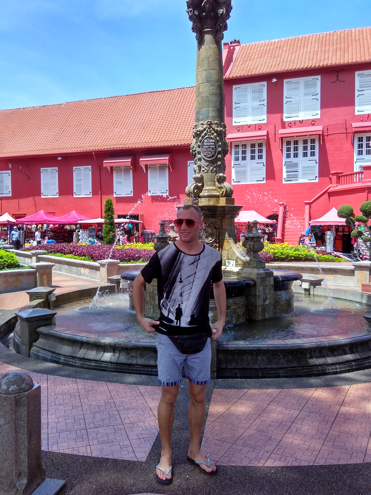
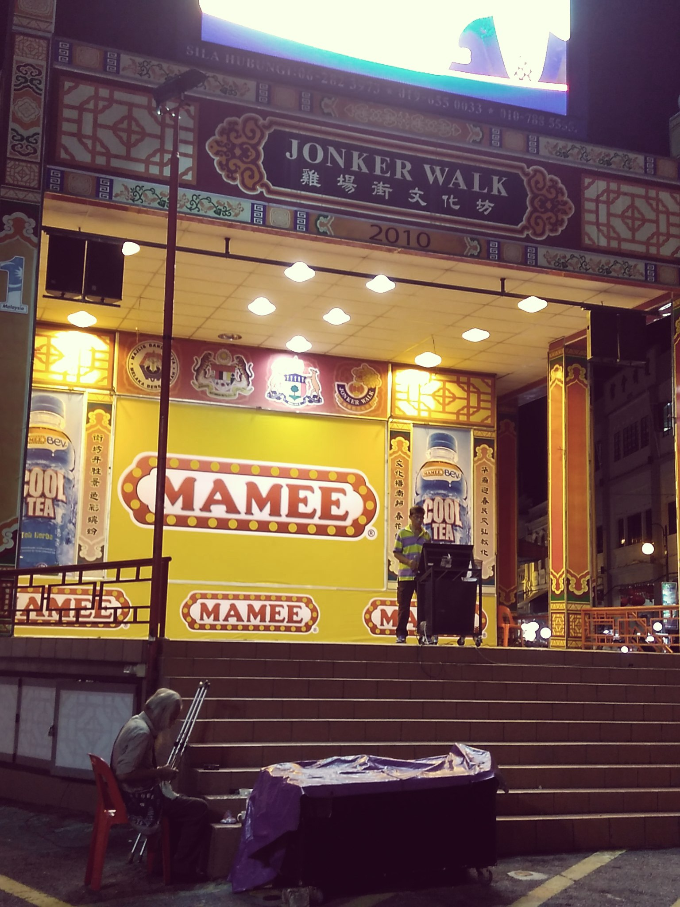
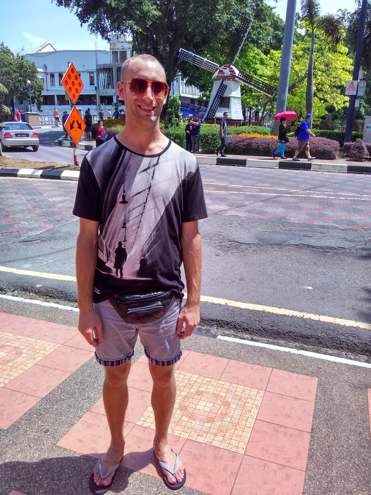

This is when taking the buses from Larkin Terminal in Johor Bahru are OK: Friday morning, 8 am bus. You get your ass up, 6 a.m. plus minus a few 10 minutes depending where you are. You catch the first MRT possible to Woodlands, wherever you are. Take the bus from Woodlands to the checkpoint, Singapore side. If you're fast enough, catch that same bus you just left to shuttle you to the Malaysian border, since it has to pass immigration too. Get off, do your legal entry into Malaysia, then catch that same bus to Larkin. If you refer to our Kuala Lumpur page, you'll see that we attempted that on a three day weekend and it didn't go so hot. This time, we were on fire
Took us only 80 minutes or so to get there, door to door, immigration included. Made it to the bus terminal, and we were off to Melaka for the week!
Since writing this post, we've actually been twice: once just Thorin and me, and once with our roommate Jane. This post ought detail both trips, so let's start with trip 1, Thorin and me:
We get to Melaka and checkin to some Kampong-like hostel that is legit. People at the front greet us and tell us that they're Peranakan, and that the house has been in the family for 4 generations. Peranakan is essentially a perfectly admixed Chinese/Malaysian variety, arising from Chinese migration there in the 15th to 17th century. I tell you, Han Chinese immigration is really interesting in this region. Anyway, we checkin and go walking.
We head first to the Portuguese quarters. The Portuguese were in Melaka from the mid 16th to 17th century, and they essentially have their own variety of "Peranakan", except mixed with Portuguese and Malay. It's pretty cool, you have the kampong-style houses but instead of being Muslims, all the houses have a crucifix attached to it from the Portuguese colonization. Not only is their religion colonial, they also have an admixed population that looks spectacular.. some perfect blend of Portuguese and Malay blood. Even better, they speak a Portuguese creole called Cristao. So in one area, they manage to bridge so many aspects of culture it's really a mind crary.
Jonkers Street is another popular place. It's the most touristy, yes, but we had a chance of viewing this both in the day and night. At night, it's a Pasar Malam (night market) of sorts, but it's oddly quiet. Not to say there isn't a lot going on, but there just isn't a lot of shouting. In fact, that tends to characterize Melaka quite well: it's just laid back. Halfway through, we see some old people sitting on plastic chairs and decide to see what's up. Kid you not, probably 50 50-something-or-others all sat, watching two 50-somethings getting up on stage and singing karaoke. And this isn't even your drunk version.. it's legit. People actually just go up and sing their favorite songs; no shame. In fact, some temples that we walked past at night also had people singing karaoke.. with people gathered in there. I vote in favor of a Christian church reform?
Other than that, there's some old things that the Dutch left behind as well as the Portuguese. Forts, churches, burials, etc. The street leading into the old town has a dark-red painted clearly on most buildings; it's almost an off-brick color. Makes for a pretty stunning view (although colonial, too).





Upon going back, the hostel owners remembered Thorin and me! But, we brought along Jane this time! We do the same circuit, Jonkers, Portuguese, etc. But this time we actually enjoy a meal at the Portuguese settlement (fish picked the day of) and it's really nice.
Near the river, there are some small bars that serve decent drinks so we just stop by and reflect. Other than that, we weren't there for very long so that's.. pretty much all we did! Hope you didn't anticipate this second half so much. There are some cool pictures though, courtesy of Jane:
